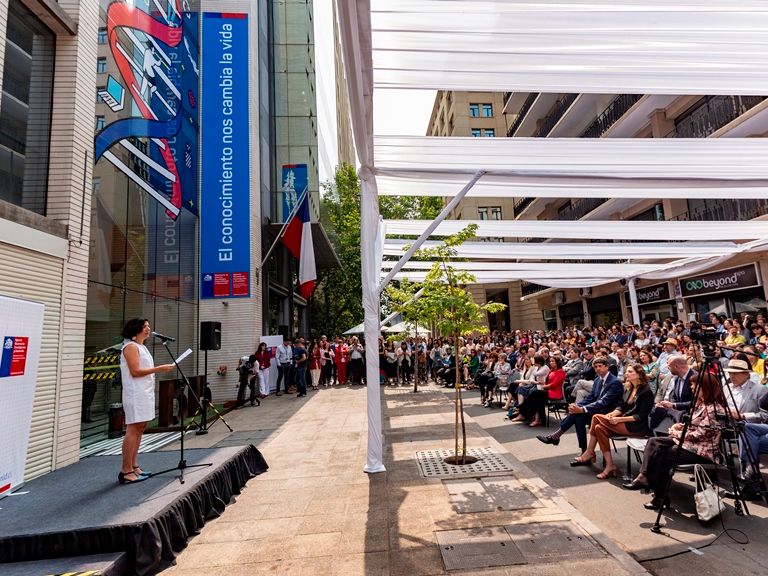

Tras 52 años de funcionamiento, el trabajo de la Comisión Nacional de Investigación Científica y Tecnológica (Conicyt) terminó. La institución, que hasta hace una semana era la encargada del desarrollo y la promoción de las ciencias en el país dejó de funcionar con fecha 31 de diciembre para dar paso, desde el 1 de enero a la Agencia Nacional de Investigación (Anid), el nuevo organismo que tendrá cinco ejes estratégicos: la formación de Capital Humano Avanzado; Investigación Asociativa; Investigación Individual; visibilización del Conocimiento y generación de Redes Estratégicas; e Investigación Aplicada.
Un verdadero hito histórico según las autoridades y un elemento clave dentro de la nueva institucionalidad científico-tecnológica de nuestro país junto con el Ministerio de Ciencia, reconocieron los asistentes.
La ceremonia de traspaso se realiza en la calle Moneda, justo en el frontis de esta institución y con todos los funcionarios presentes, además de algunos investigadores de distintas partes del país. ¿La razón? “Quisimos darle al acto una impronta ciudadana y abierta y esa es la razón por la que estamos en la calle y frente al edificio que esperamos siga siendo aún más la casa del conocimiento, explicó la directora de la Anid, Aisén Etcheberry.
El ministro de Ciencia, Andrés Couve, destacó que la nueva institucionalidad “coincide con un momento de profunda reflexión sobre el futuro del país en temas sociales y medioambientales, donde la ciencia debe ser un actor clave”. A su juicio, “es fundamental contar con una agencia independiente que ejecute una visión estratégica” y que además sea “un órgano inteligente, flexible y que simplifique procesos”.
“Es una continuación de Conicyt, que fue la agencia principal de financiamiento de la ciencia y la tecnología por muchos años”, dijo Etcheverry
La Anid reunirá a todos los centros de investigación que hasta fines de 2019 se encontraban dispersas en distintas instituciones y ministerios.
La subsecretaria de Ciencia Carolina Torrealba señaló que “esta nueva institucionalidad busca construir un camino más ancho y diverso, más comprometido y conectado con la sociedad, y más justo e igualitario. Para eso pondremos foco especial en tres grandes inequidades de nuestro sistema: uno es género, otro es regiones, y el tercero tiene que ver con construir condiciones laborales más justas”.
“Los desafíos que tenemos por delante son muchos: mayor participación, mayor coordinación, mayor integración, hacernos cargo de las desigualdades del sistema, pero también acercar a nuevos públicos. Hoy pasamos a ser la Agencia Nacional de Investigación y Desarrollo y, como tal, tenemos que involucrar a la industria, a la sociedad en general y a la ciudadanía. Debemos sacar el conocimiento que se genera aquí, para que contribuya, de verdad, al desarrollo social, político y económico de nuestro país”, dijo la nueva directora nacional.
Esta es la primera vez que todos los centros dedicados a fomentar la investigación en ciencia están reunidos bajo un mismo techo. “Los centros han sido en Chile una política pública muy exitosa que ha contribuido a que el sistema de ciencia tecnología e innovación alcance un nivel de calidad reconocimiento internacional” pero al que también le faltan algunas cosas como por ejemplo, relacionarse mejor entre ellos y tener una gestión integrada de todos los instrumentos de centro.
Para mejorar estas falencias, Couve adelantó que durante los próximos meses se dará a conocer un nuevo plan de centros, una nueva política de investigación que crea una Unidad de Centros al interior de la Anid.
“Es un plan de acción que va a gestionar en un principio a los Institutos Milenio, a los centros basales, al Fondap y los regionales. En un futuro próximo, se incorporan aquellos centros que hoy dependen de la Gerencia de Capacidades Tecnológicas de la Corfo”, dijo Couve.
Además, se trabajará en la creación de “redes de centros” para mejorar la vinculación entre ellos. “Tenemos un instrumento nuevo, de vanguardia, que va a permitir que los centros se asocien para obtener financiamiento para un desarrollo estratégico particular. Vamos a tener algunas medidas regulatorias para que los centros puedan participar concursos Fondequip (de equipamiento tecnológico) como centro con personalidad jurídica propia y toda una serie de acciones cuyo objetivo es tener más y mejores centros”, señaló el ministro de Ciencia.
A cargo de esta Unidad de Centro, estará una persona que tendrá como función coordinar la gestión de todos los instrumentos que permitan simplificar los accesos tanto a la información como a las postulaciones y que será nombrada durante el primer trimestre de este año.
Alexis Kalergis, profesor e investigador de la U. Católica y director del Instituto Milenio de Inmunología e Inmunoterapia (Imii) señaló que “es clave que la nueva Anid promueva la formación e inserción de jóvenes científicas y científicos, por medio de los instrumentos accesibles y eficientes que necesita una carrera en ciencia”. Otros desafío importante que mencionó el investigador es conseguir una verdadera equidad de género en la ciencia y seguir acercándola a la sociedad.
Para el Premio Nacional de Ciencias, doctor Ramón Latorre, director del Centro Interdisciplinario de Neurociencia de la Universidad de Valparaíso (Cinv), “a través de esta nueva Agencia los científicos tenemos la institucionalidad adecuada, para que el conocimiento se desarrolle en Chile sin trabas”. Según él, la creación de la Anid es y será un gran paso adelante en la proyección científica nacional.
Claudio Hetz, director del Instituto Milenio de Neurociencia Biomédica (BNI), de la Facultad de Medicina de la Universidad de Chile, también tuvo palabras de elogio. “Este es un hito histórico que hemos estado esperando durante una década. La Anid fortalecerá la organización de la ciencia chilena”, dijo
Otra de las novedades que se dieron a conocer durante la ceremonia de traspaso de Conicyt a la Anid es la Agenda de Equidad de Género para el sistema científico que se lanzará a fin de mes. En palabras de la subsecretaria de Ciencia “debemos cautelar todas las medidas que estén a nuestro alcance para reconocer esta inequidad histórica, y que el sistema se haga cargo de que hombres y mujeres puedan desplegarse con todas sus virtudes y capacidades”.
Sin embargo, y mientras las autoridades subían al pequeño escenario para sus discursos, un grupo de historiadoras se instaló a un costado para manifestarse contra la discriminación de género, la poca participación que han tenido en la elaboración de esta política y la entrega de recursos que han hecho a personas que han sido acusadas e incluso desvinculadas de las universidades por acoso.
Adriana Bastías, presidenta de la Red de Investigadoras explicó dentro del proceso de evaluación que realiza Conicyt no se consideran aspectos éticos de las personas, ni siquiera cuando están siendo sumariados e incluso han sido desvinculados, como ocurrió recientemente. “A Coniciyt le da lo mismo la ética de las personas que postulan a los fondos y le dan recursos a investigadores que incluso están sumariados. La agencia de Estados Unidos, desde hace dos años que no financia a los acosadores. Ellos no solo se fijan en cuestiones académicas, también evalúan la ética”.
Respecto de la participación de la sociedad civil, Bastías reclama que el anuncio de la nueva agenda de equidad en ciencia se realizará en tres semanas más, pero no han sido invitadas todas las agrupaciones a participar y quienes han asistido, reclaman porque la preocupación de la autoridad es más bien aumentar el número de mujeres y de algunas medidas, pero no se han reunido con las agrupaciones que se preocupan de los temas de género.
Archivo: publicado originalmente el 9 de enero de 2020 en el sitio anterior de la Sociedad (https://socneurociencia.cl/2020/01/09/conicyt-llega-a-su-fin-ahora-la-investigacion-cientifica-esta-en-manos-de-la-anid/).